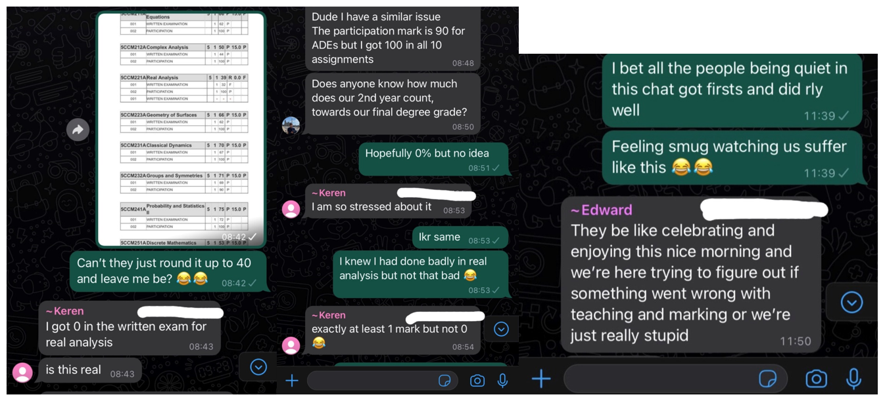
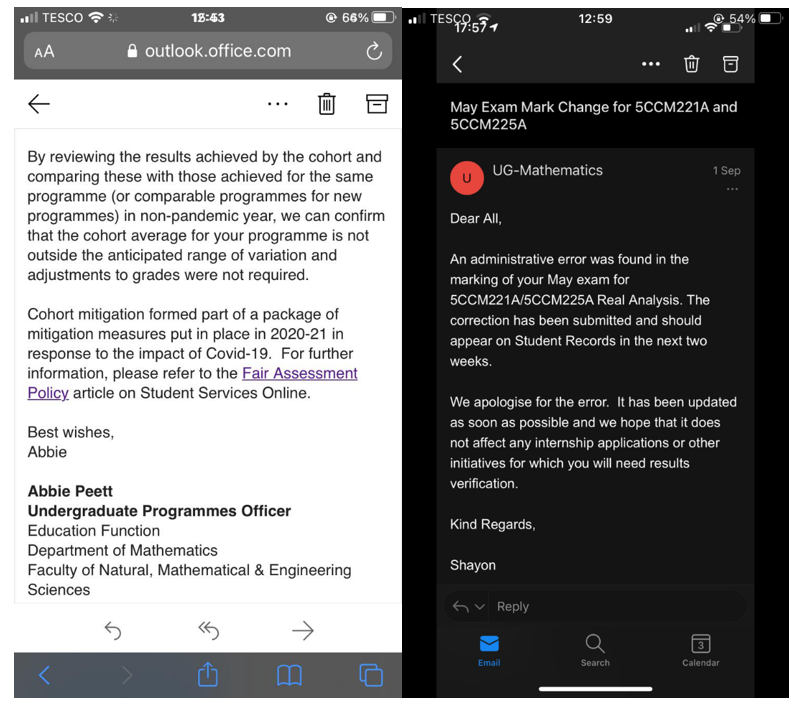
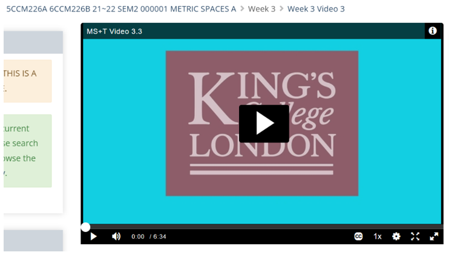
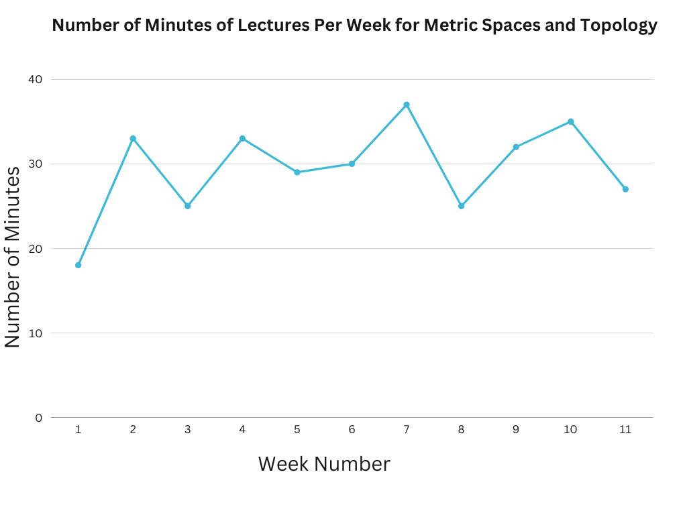
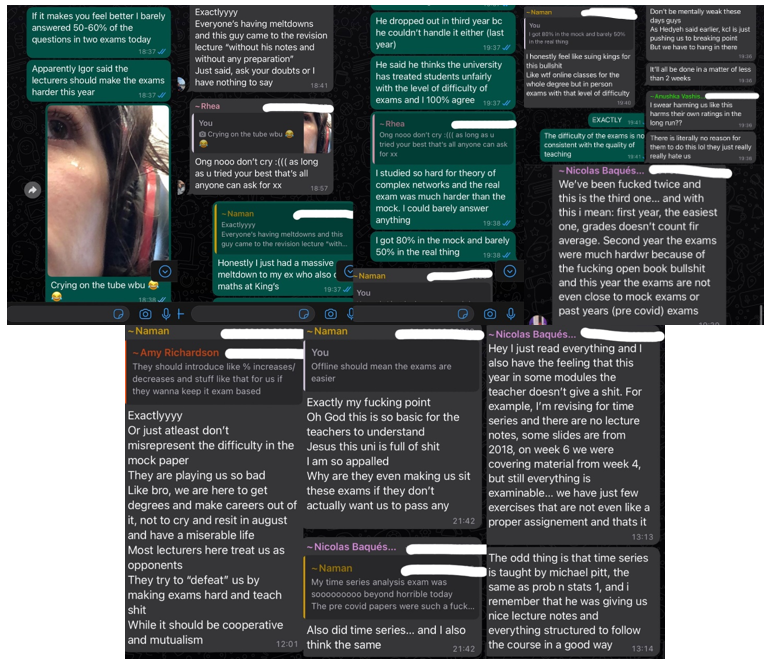
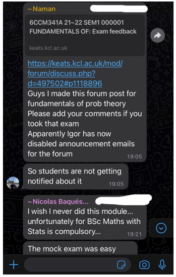
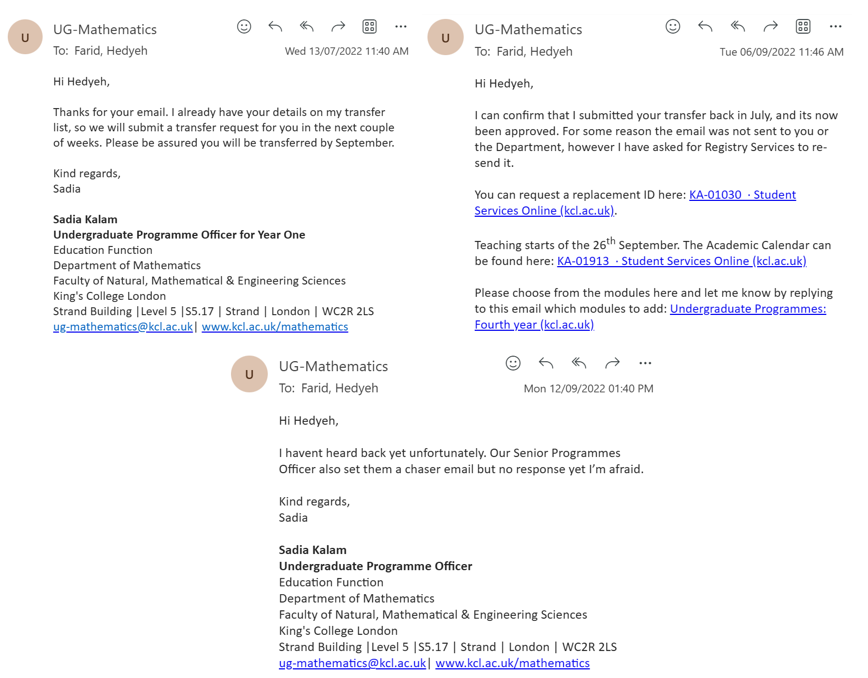
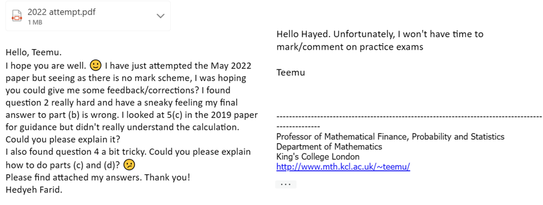
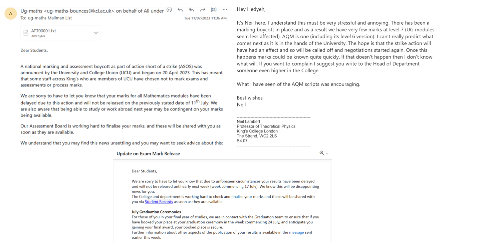

Prior to the beginning of our first semester, we were told half of our learning would be on campus and the other half, online. Upon receiving my timetable, I discovered everything except for two tutorials would be done online despite the country coming out of its first lockdown. And then obviously when we went into a second lockdown in November 2020, studying and teaching became entirely remote.
Prior to the pandemic, we received 20 contact hours per week. This consisted of 12 hours of lectures, 4 hours of tutorials and 4 hours of skill sessions. We took 4 modules each semester, which equated to 3 hours of lectures per module per week. During the pandemic, the lecturers uploaded pre-recorded lectures for us to watch before live Teams skills sessions. I totalled the number of minutes per week we were lectured for some modules and the results were pretty shocking, as illustrated in the graph below:
As you can clearly see, the lecturers did not put nearly as much effort into teaching as they would have before the pandemic. The average number of minutes for real analysis was 46, 77 for classical dynamics, 57 for applied differential equations, 91 for discrete maths and 64 for geometry of surfaces. Compared to the expected 180 minutes, I think we can all agree the effort put in by most of the lecturers in my second year equated to very little.
Come exam time, we were given 2 hours for each exam which began at 8am. The university told us there had been an issue with timetabling when some people pointed out 8am was far too early for them (due to time differences abroad). The exams were remote and open book. The second years before us were given entirely multiple-choice exams at a much easier level with no negative marking. I complained to the department about the inequities in how we were being examined compared to previous year' second year students and they simply told me the way we were being assessed was more effective in testing us and they would not review their methods. I achieved a 2:1 overall for my second year exams but failed one of my modules, real analysis, by 1% and was told I would have to retake it in August. One student even scored 0% for the exam. As Results Day went on, it became clear the one module everyone had done spectacularly bad in was real analysis. Some of us had also received 100% in our assignments which contributed 10% to our grade for each module, but this did not translare to our final results. I achieved 90% for participation in groups and symmetries despite receiving 100% in all assignments. This was later amended, though it took some time:
It then transpired there had been an error in the marking of the real analysis papers. But most of us who failed had the exact same scores as before this error had been spotted. We complained to the department and they came back to us only within a few hours to say they had thoroughly reviewed the exam and ruled we were examined fairly:
The country has pretty much been fully out of lockdown from March 2021. And yet, we were still receiving lectures online for some of our modules. The lecturers had been given the choice between lecturing in person and online. Of the 8 modules I chose, 5 were taught online. For one module, metric spaces and topology, which I took in my second semester (January to March 2022), the lecturer uploaded very short videos, sometimes as short as 6 minutes:
I also totalled the number of hours per week on average we were lectured for this module. It came to 29 minutes. Bearing in mind we had come well out of lockdown, so should have been going back to receiving 3 hours of lectures per module per week, this is unacceptable. This graph shows how many MINUTES of lectures we received for metric spaces and topology per week:
Come exams, I studied religiously 8 hours a day at my desk for weeks. I studied from textbooks, the lecture notes, assignments and past papers. The exams were to be closed book and in-person for the first time since the pandemic. I felt fairly confident about my second exam, theory of complex networks. The mock papers were more than doable, I was scoring 80% when I marked myself harshly. However, the exam was horrifically difficult, it in no way resembled any past papers or assignments and I left the exam in tears with my friend. My friend turned to me and said "Oh, didn’t you know? Igor is this year’s head of exams and he told the lecturers to give us completely unseen and much harder material for our exams that doesn’t resemble the past papers or assignments. Even said to make them harder than the open-book covid exams." I asked my introductory quantum mechanics lecturer on a call whether this was true and he confirmed that was what he had been told. I felt as though my hard work would amount to nothing and suffered from panic attacks daily, dreading to go into that exam room. It turns out, I was not alone. In my year’s group chat, other students were also despairing, echoing my thoughts and feelings. It is fair to say, people were very passionate about the inequities in how we were being treated:
Furthermore, a fellow student Naman had posted onto our university’s online forum asking for people’s opinions on a particular exam. However, the head of exams Igor disabled notifications to this post so no one would be aware of its existence. This was clearly the department’s way of trying to pacify us so we would not be able to express our opinions:
Before the exam period started, I informed the department I wanted to transfer to an integrated masters, meaning I would remain at King’s for an extra year. They told me they would keep my details and enrol me onto the masters if my grades met their requirements. Come Results Day, I scraped a 2:1 and calculated my combined score over my second and third years was enough to enrol onto the masters. So I informed the department and they said they would put in a transfer request which should be approved by September. Alas, by September I still had not heard anything. So I contacted the department again and they informed me my request had been approved but I had not been sent a confirmation email, which would mean I could not re-enrol. I asked them to re-send the transfer request. This was 3 weeks before the semester was due to start. I had not been able to select my modules. I waited another week and still, had heard nothing. So I decided to take matters into my own hands and visited the campus to see if they could re-enrol me there. All it took was for the lady assisting me to press one button and I was in. I had only a week to select my modules, whereas other students already on the integrated masters would have had many weeks from March to select theirs. This meant I had to choose some modules I did not want to do as others were close to full capacity. Had I not visited the campus to sort things out, I most likely would not have been enrolled at all, or else it would have eaten into the first semester:
Teaching had pretty much gone back to normal: 3 hours of lectures per week in person. Though some lecturers had chosen to do 2 hours per week. I selected financial markets as one of my semester 1 modules. We had no tutorials or assignments and come exam time, some of the past papers were not accompanied with mark schemes so we could not see how well we were performing. I asked my lecturer if he could make these available and he coldly replied that the mark schemes were not available to anyone on the course. I asked him why he would not upload them and was ignored. The week of the exam, I was struggling with the 2022 paper so I emailed my lecturer with a pdf of my answers and asked him for assistance. Not only did he refuse to provide me with any, he spelled my name incorrectly despite the fact it was written clearly in the email I had sent him:
Unsurprisingly, the actual exam had a question very similar to one of the ones I was struggling with. I simply had to make intelligent guesses but was not confident at all.
We were told by the mathematics department that we would receive our results on the 11th July. However, we received an email on the day saying there has been a boycott where some lecturers/examiners are refusing to mark our papers and so the department does not know when we will get our results. I am supposed to graduate on 26th July, I am applying for jobs asking for a 2:1 and am unable to write in my CV that I have achieved it. This could impede my job opportunities as other applicants most likely already have their degree/final grade:
I studied 8 hours a day for weeks over the Christmas break and Spring break before exams. This degree cost £37,000 and I have even paid over £100 for my graduation gown and my family to see me graduate. We students have worked far too hard to be receiving this sort of treatment as a consequence of the universities disorganisation and lack of regard for students and their wellbeing.